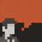

<footer>
	<div class="wrapper">
	
		<ul  class="widget-cols clearfix">
			<li class="first-col">
				
				<div class="widget-block">
					<h4>Recent posts</h4>
					<div class="recent-post">
						<a href="#" class="thumb"></a>
						<div class="post-head">
							<a href="blog.html">New website</a><span> Dec 15, 2015</span>
						</div>
					</div>
				</div>
			</li>
			
			<li class="second-col">
				
				<!-- <div class="widget-block">
					<h4>Zeni Template</h4>
					<p>Hope you find this template useful you are free to use it on personal and commercial projects. See the full license at this <a href="http://luiszuno.com/blog/license" >link</a></p>
				</div> -->
				
			</li>
			
			<li class="third-col">
				
				<!-- <div class="widget-block">
					<div id="tweets" class="footer-col tweet">
         				<h4>Twitter widget</h4>
         			</div>
         		</div> -->
         		
			</li>
			
			<li class="fourth-col">
				
				<!-- <div class="widget-block">
					<div id="tweets" class="footer-col tweet">
         				<h4>Twitter widget</h4>
         			</div>
         		</div> -->
         		
			</li>
		</ul>				

		<div class="footer-bottom">
			<div class="left">Created by <a href="http://www.luiszuno.com" >luiszuno.com</a></div>
			<div class="right">
				<p>COPYRIGHT &copy 2015 mdehdashti.com. ALL RIGHTS RESERVED</p>
				<!--<ul id="social-bar">
					<li><a href="http://www.facebook.com/pages/Ansimuz/224538697564461"  title="Become a fan" class="poshytip"></a></li>
					<li><a href="https://twitter.com/ansimuz" title="Follow my tweets" class="poshytip"></a></li>
					<li><a href="https://plus.google.com/109030791898417339180/posts"  title="Add to the circle" class="poshytip"></a></li>
				</ul>-->
			</div>
		</div>
		
	</div>
</footer>